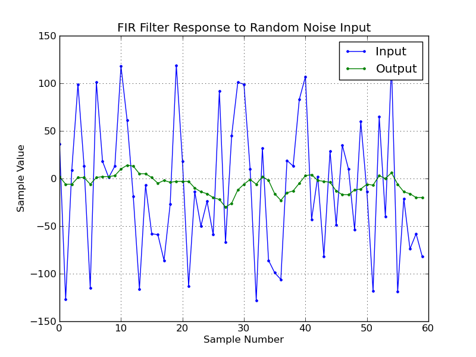

Now we create a more interesting example and implement an FIR filter. This will introduce two new concepts of registers and Bin hierarchy.
Here is the code to generate a simple FIR filter.
1 2 3 4 5 6 7 8 9 10 11 12 13 14 15 16 17 18 19 20 21 22 23 24 25 26 27 28 29 30 31 32 33 34 35 36 37 38 39 40 41 42 43 44 45 46 47 48 49 | import seq
from seq import Bin, Sequence
# create the signal definitions
xin = seq.Signal(name="xin", width=8, signed=True)
coeff = seq.Signal(name="coeff",width=8, signed=True)
mult = seq.Signal(name="mult", width=16, signed=True)
xout = seq.Signal(name="xout", width=20, signed=True)
# Create the base fir Bin that has the basic sequences necessary to
# create a MAC (Multiply, ACcumulate) and to reset it.
fir_base = Bin.Bin(
name = "fir_base",
regs = [mult, xout],
seqs = [
# Create a sequence to reset the output accumulator
Sequence.Set(name="reset", set=dict(xout=0)),
# Implement a multiplier that can multiply tap coeffs and
# input samples. This is a serial multiplier, which means it
# is slower but smaller than a single clock multiply. If
# speed is essential, change this to a Sequence.Multiply.
Sequence.SerialMultiply(name="mult", a=xin, b=coeff, out=mult),
# Create an accumulating sequence by adding the output of the
# multipler with the output register.
Sequence.Add(name="accum", a=mult, b=xout, out=xout, clamp=True),
]
)
# This Bin implements the higher level sequences of an FIR filter.
# The Repeat sequence is used to cycle through
fir = Bin.Bin(
name = "fir",
children = [fir_base],
seqs = [
# The complete filter is implemented as a Serial sequence that
# has some embeded sequences to Repeat the multipy/accumulate
# 16 times.
Sequence.Serial(
["reset",
Sequence.Repeat(count=16, # number of taps in the FIR filter
counter=seq.Signal(name="addr", width=5),
subseq=Sequence.Serial(["mult", "accum"])),
],
),
],
)
fir.vlog_dump(recurse=True)
|
Here you can see an example of this FIR filter in action when simulated with tap coefficients that are uniform (implements a moving average) and random input samples.
The member registers of a Bin are specified using the regs keyword as shown on Line 14. In the FIR example, there are two registers that the fir_base Bin controls. These registers are exported as outputs of the module. The mult and xout registers get specified on lines 7 and 8 as signed 16 bit and 20 bit signals, respectively. The mult register is controlled by the SerialMultiply Sequence specified as a member sequence on line 23.
To use this FIR implementation requires writing some custom verilog to hook up the buffers for the tap coefficients and the input samples and to interface to those buffers based on the address being exported by the generated code. Following the verilog that does this.
module fir_top
#(parameter DATA_WIDTH=8
)
(input clk,
input reset_n,
input [DATA_WIDTH-1:0] xin,
input we,
output running,
output done,
output [DATA_WIDTH-1:0] xout
);
localparam COEFF_WIDTH=8; // width of FIR tap coefficents. also set in the seq script
localparam N = 5'd16; // number of taps in FIR filter, also set in the seq script
localparam N_WIDTH = 5; // CEIL(LOG2(N)), also set in the seq script
localparam FIR_OUT_WIDTH=20; // if you change this you also need to change the seq script
// create buffers for input stream and coefficients
reg [COEFF_WIDTH-1:0] fir_coeffs[0:N-1];
reg [DATA_WIDTH-1:0] xin_buf[0:N-1];
wire [FIR_OUT_WIDTH-1:0] xout_raw;
wire running_pre;
assign running = running_pre | we_s;
reg we_s;
wire [N_WIDTH-1:0] fir_addr;
reg [N_WIDTH-1:0] waddr;
wire [N_WIDTH:0] raddr = waddr + fir_addr;
wire [N_WIDTH-1:0] xin_buf_addr = (we) ? waddr : (raddr >= N) ? raddr - N : raddr; // when writing, set the ram address to waddr, when reading, we need to make the read address a circular buffer, so we need to wrap the read addr modulo N
reg [COEFF_WIDTH-1:0] coeff;
reg [DATA_WIDTH-1:0] xin1;
integer j;
always @(posedge clk or negedge reset_n) begin
if(!reset_n) begin
we_s <= 0;
coeff <= 0;
waddr <= 0;
xin1 <= 0;
for(j=0;j<N;j=j+1) begin
fir_coeffs[j] = 8;
xin_buf[j] = 0;
end
end else begin
we_s <= we;
if(we) begin
xin_buf[xin_buf_addr] <= xin;
end else if(done) begin
if(waddr == N-1) begin
waddr <= 0;
end else begin
waddr <= waddr + 1;
end
end else begin
xin1 <= xin_buf[xin_buf_addr];
end
coeff <= fir_coeffs[fir_addr];
end
end
fir fir
(.clk (clk),
.reset_n (reset_n),
.coeff (coeff),
.xin (xin1),
.seq (1'b0),
.start (we_s),
.addr (fir_addr),
.xout (xout_raw),
.mult (),
.running (running_pre),
.done (done)
);
localparam EXTRA_BITS = FIR_OUT_WIDTH - DATA_WIDTH - COEFF_WIDTH + 1;
assign xout = xout_raw[FIR_OUT_WIDTH-EXTRA_BITS-1:FIR_OUT_WIDTH-EXTRA_BITS-DATA_WIDTH];
endmodule
For this implementation, the input stream must be much slower than the clock rate to give time to serially multiply and accumulate the 16 taps for each sample.